Daniel Suckrow · Online-Ernährungsberatung
Was dich nährt. Was dich weiterbringt.
Entdecke eine Ernährung, die zu dir, deinem Alltag und deinen Zielen passt – ganzheitlich und wissenschaftlich fundiert.
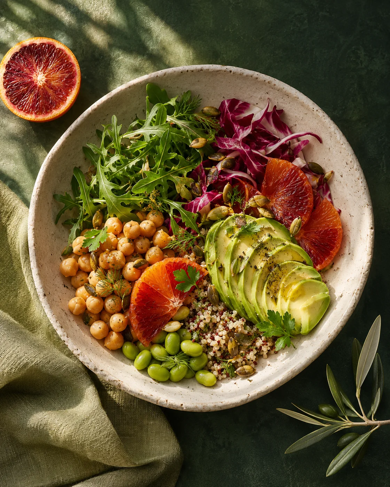
Ganzheitliche Beratung für Ernährung, Wohlbefinden und Alltag.
Wir schauen nicht nur darauf, was auf deinem Teller liegt, sondern auf dich als ganzen Menschen. In persönlichen Gesprächen verbinden wir Essgewohnheiten, Lebensstil und Ziele mit alltagstauglichen Ideen, praktischer Orientierung und verständlichem Ernährungswissen. Ziel ist eine Ernährung, die deine Gesundheit unterstützt und zu deinen Vorlieben und deinem Alltag passt. Die Beratung findet flexibel online statt.
Ob mit Fleisch, vegetarisch oder vegan: Wir starten bei deinen Gewohnheiten: Dein Alltag hat Vorrang.
Veränderung ohne Verzicht auf dich selbst.Deine Ernährung soll zu deinem Leben passen – nicht umgekehrt.
Grün markierte Schritte sind nur im Komplett-Paket enthalten.
01Erstes 30-Minuten-Kennenlerngespräch (nur im Komplett-Paket)
Wenn du vor der Buchung Fragen hast, kannst du ein kostenloses, unverbindliches Online-Kennenlerngespräch von etwa 15 Minuten buchen. Es ist optional und gehört nicht zum gebuchten Beratungspaket. Im Komplett-Paket ist trotzdem ein persönliches Kennenlernen per Video von etwa 30 Minuten enthalten. Im Kompakt-Paket ersetzen Unterlagen zum Ausfüllen das Kennenlernen.
02Eine Woche Ernährungserfassung
Du dokumentierst eine Woche lang deine Mahlzeiten und Getränke, ohne deine gewohnte Ernährung künstlich zu verändern. Das Dokument zur Erfassung stelle ich dir bereit.
03Ärztliche Blutuntersuchung
Ich empfehle dir, während derselben Woche beim Hausarzt oder bei der Hausärztin eine Blutuntersuchung durchführen zu lassen. Organisation und mögliche Kosten der Untersuchung liegen bei dir.
04Individuelle Auswertung
Ich betrachte dein Ernährungsprotokoll und die von dir bereitgestellten ärztlichen Blutwerte im Zusammenhang.
05Personalisierte PDF
Du erhältst eine individuelle PDF mit verständlichen Ergebnissen und konkreten, alltagstauglichen Empfehlungen – abgestimmt auf deine Vorlieben und Routinen.
06Persönliches Auswertungsgespräch · etwa 30 Minuten (nur im Komplett-Paket)
Im Komplett-Paket ist ein abschließender Online-Call von etwa 30 Minuten enthalten. Wir besprechen darin deine Auswertung und offenen Fragen. Im Kompakt-Paket klären wir Rückfragen per E-Mail.
07Kontakt bei weiteren Fragen
Auch über die Beratung hinaus kannst du dich bei weiteren Fragen per E-Mail an mich wenden. info@veganiel.com
Mehr Klarheit
für deinen Alltag.
Neugierig bleiben. Dich besser kennenlernen.
Hier beginnt dein nächster kleiner Schritt.
Wie geht es
dir wirklich?
Ernährung, Schlaf, Bewegung und Gewohnheiten zusammen betrachten. Dein Gesundheitscheck als persönliche Orientierung.
Gesundheitscheck startenDein Wissen.
Dein nächstes Level.
21 Quizze. Sieben Themen.
Wie viel weißt du wirklich?
Einfach mal
anfangen.
Sechs Challenges, die dich ins Tun bringen – vom ersten 5-km-Lauf bis zum Halbmarathon.
Challenges entdeckenHeute gut leben.
Morgen auch.
Dein Longevity-Protokoll für Ernährung, Regeneration und Routinen.
Protokoll entdeckenEinfach kochen.
Richtig gut essen.
Pflanzliche Rezepte für jeden Tag – mit Dinkel, Vollkorn, Hülsenfrüchten und Proteinangabe pro Portion.
Zu den Rezepten


Was steckt
wo drin?
Eisen, Calcium, B12, Jod und mehr – mit Bedarf, Quellen und Rezepten.
Zum LexikonDeine Werte besser verstehen.
Sieben Rechner. Kostenlos für dich.Rechner geben Orientierung und ersetzen keine medizinische Diagnose.
Hi, ich bin Daniel.
Schön, dass du
hier bist.
Mich begeistert, wie Ernährung, Gesundheit und unser Alltag zusammenhängen. Ich möchte dir helfen, deinen eigenen Weg zu finden – mit fundiertem Wissen, Neugier und einem offenen Ohr.
Als ganzheitlicher Ernährungsberater und staatlich anerkannter Sozialarbeiter verbinde ich Fachwissen mit einem Blick auf dich als ganzen Menschen.
Für deinen
Wissenshunger.
Ernährung, Gesundheit und ein bewusster Alltag.
Verständlich erklärt. Mit Raum zum Weiterdenken.
Vitamin D im Winter: Wie viel Sonne und wie viel Vitamin D brauchst du?
Wie viel Sonne du brauchst, welche Dosis im Winter sinnvoll ist und welche Blutwerte du anstreben solltest.
Beitrag lesenAchtsames Spazieren im Wald: Den Moment bewusst wahrnehmen
Sieben Impulse, um die Sinne zu öffnen, zur Ruhe zu kommen und die Natur bewusster zu erleben.
Beitrag lesen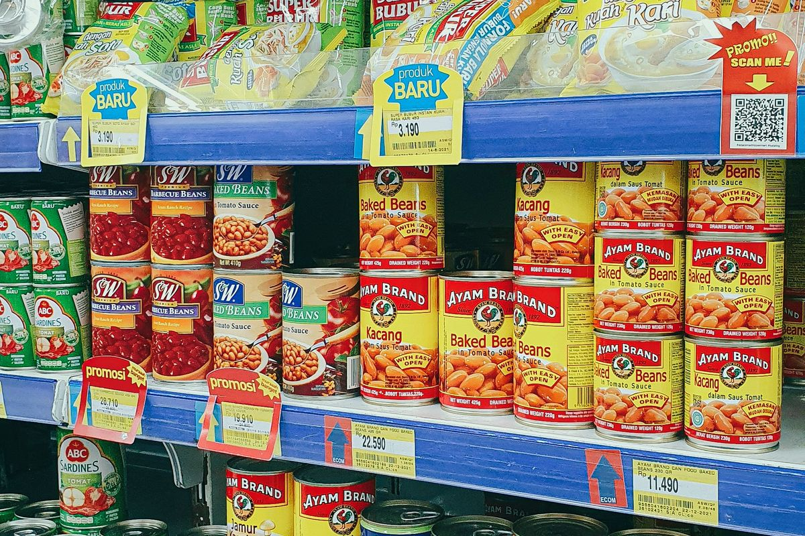
Zusatzstoffe in Lebensmitteln: Was ist bedenklich und worauf kommt es an?
Was E-Nummern bedeuten, wie Zusatzstoffe bewertet werden und wie Apps wie Yuka einzuordnen sind.
Beitrag lesenUmgang mit Stress: Ursachen verstehen und besser damit umgehen
Wie Stress entsteht, welche Funktion er hat und welche Strategien im Alltag helfen können.
Beitrag lesen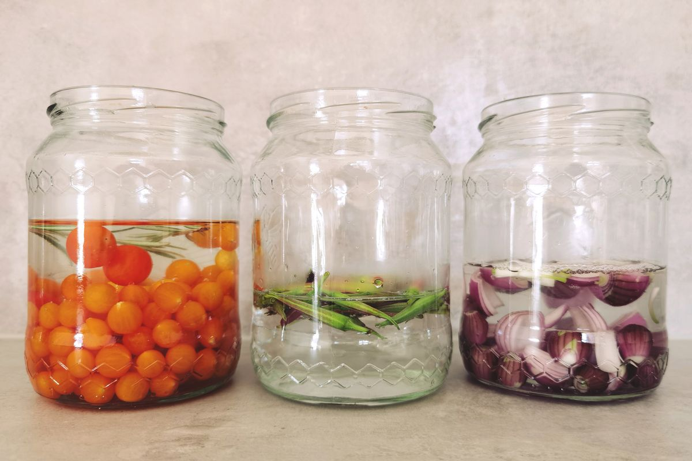
Darmgesundheit statt Darmreinigung: Was wirklich hilft
Warum Detox-Kuren nicht nötig sind und was Verdauung und Darmmikrobiom tatsächlich unterstützt.
Beitrag lesenAchtsamkeit: Den Moment bewusster wahrnehmen
Wie du im Alltag innehalten, deine Aufmerksamkeit schulen und achtsamer leben kannst.
Beitrag lesen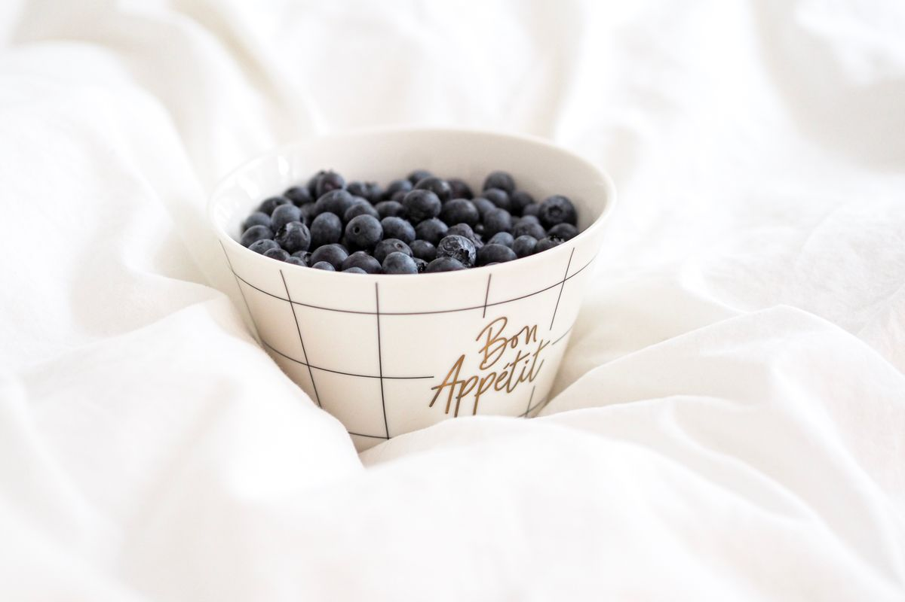
Antioxidantien: Wirkung, oxidative Prozesse und gute Lebensmittelquellen
Was Antioxidantien leisten und warum Vielfalt wichtiger ist als ORAC-Werte.
Beitrag lesen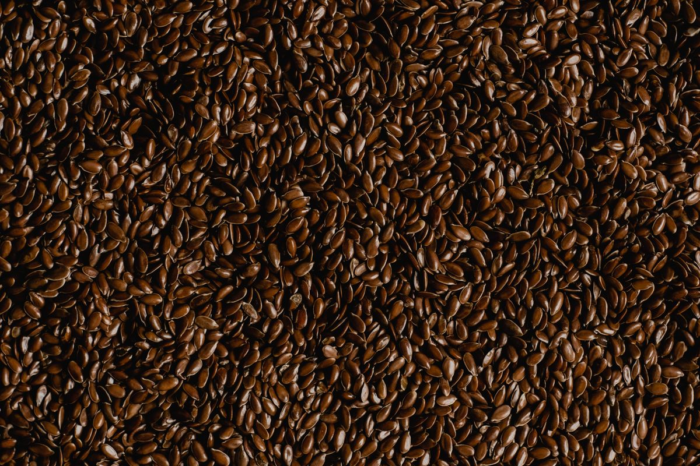
Omega-3 und Omega-6: Verhältnis, Quellen und was wirklich zählt
Warum beide Fettsäuren wichtig sind und weshalb das Verhältnis allein nicht entscheidend ist.
Beitrag lesenKritische Nährstoffe bei veganer Ernährung: Worauf kommt es an?
Welche Nährstoffe besondere Aufmerksamkeit verdienen und wie eine bedarfsgerechte Versorgung gelingt.
Beitrag lesenAntiangiogenese und Krebs: Was Ernährung tatsächlich bewirken kann
Wie Medikamente die Gefäßneubildung hemmen – und was über Lebensmittel wirklich bekannt ist.
Beitrag lesen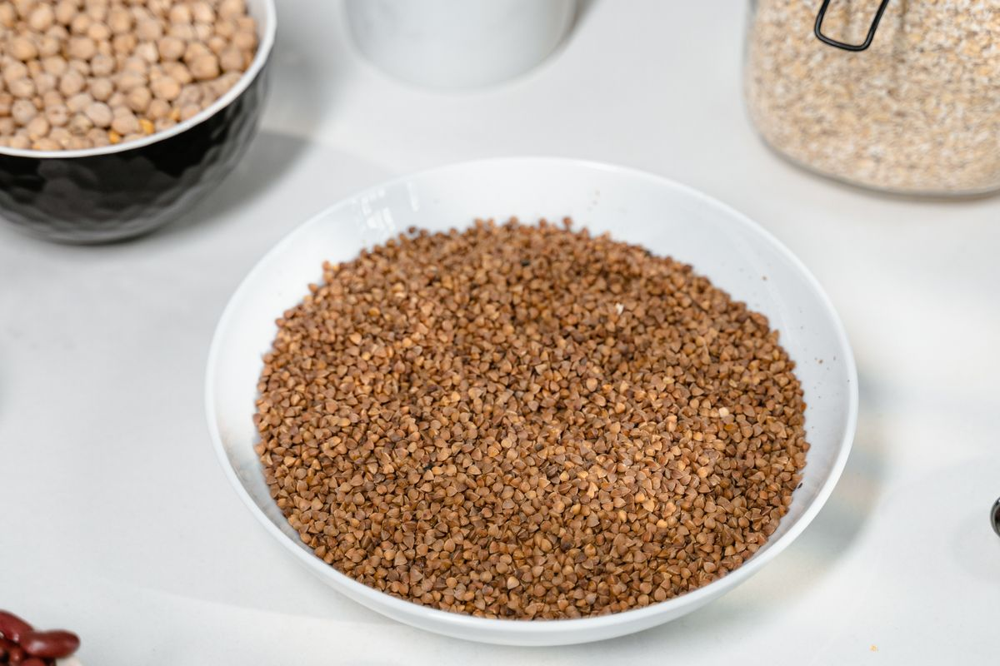
Ballaststoffe: Bedeutung für Darm, Mikrobiom und Gesundheit
Wie Ballaststoffe Verdauung und Darmmikrobiom unterstützen und wie du 30 Gramm täglich erreichst.
Beitrag lesen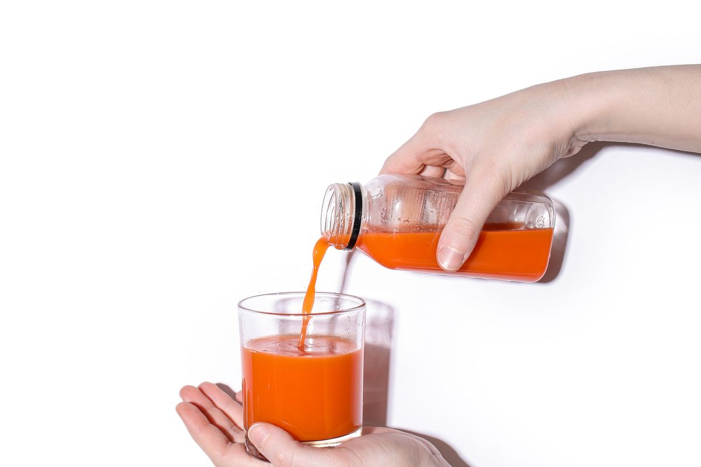
Karottensaft: Nährstoffe, Beta-Carotin und lilafarbene Karotten
Was Karottensaft auszeichnet und worauf es bei der Zubereitung ankommt.
Beitrag lesen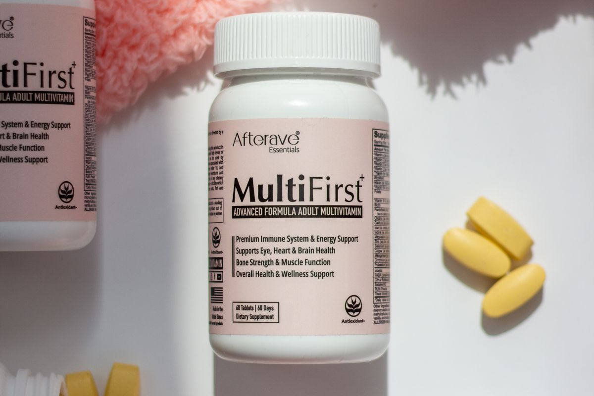
Vitamin B12 und vegane Ernährung: Was ist wirklich wichtig?
Aufklärung und Empfehlungen zur Vitamin-B12-Versorgung.
Beitrag lesenDiskriminierung: Wenn Körper bewertet und Interessen übersehen werden
Über Empfindungsfähigkeit, Ungleichbehandlung und Ernährungsgerechtigkeit.
Beitrag lesen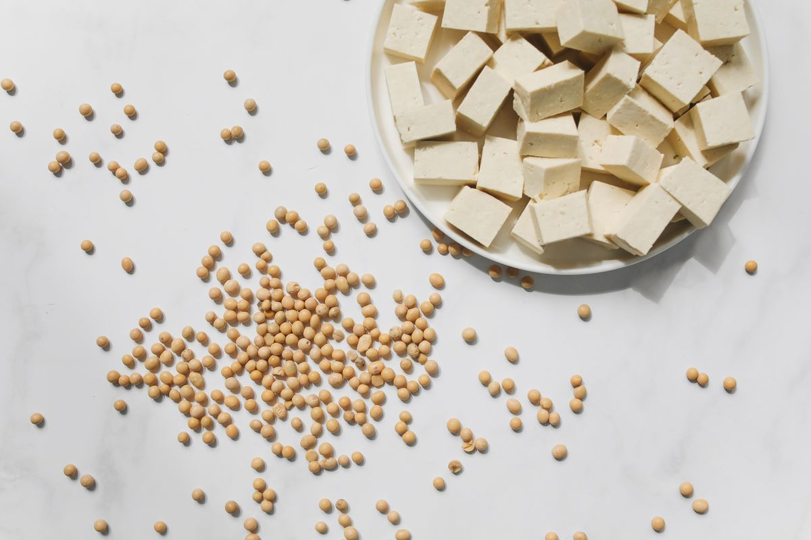
Meat-based Bioactive Compounds
Ein Blick auf bioaktive Verbindungen und ihre Bedeutung bei veganer Ernährung.
Beitrag lesen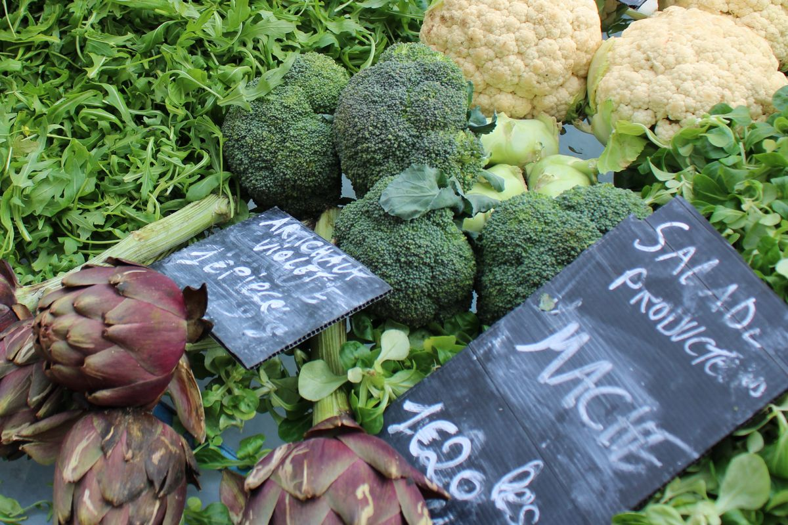
Veganismus: Chancen und Herausforderungen
Eine kritische und differenzierte Auseinandersetzung mit veganer Lebensweise.
Beitrag lesen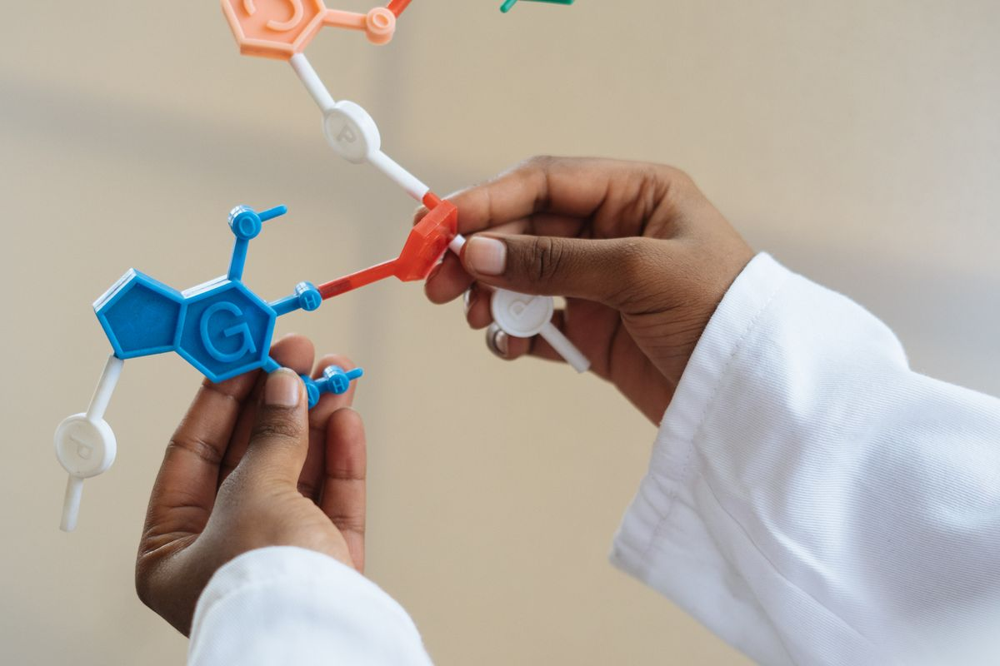
Was sind Telomere und Telomerase – und wofür sind sie wichtig?
Was diese Strukturen sind und welche Rolle sie für unsere Zellen spielen.
Beitrag lesenDrei wichtige Nahrungsergänzungsmittel: Omega-3, Vitamin D und Vitamin C
Ein Beitrag über ausgewählte Supplemente und ihre mögliche Bedeutung.
Beitrag lesen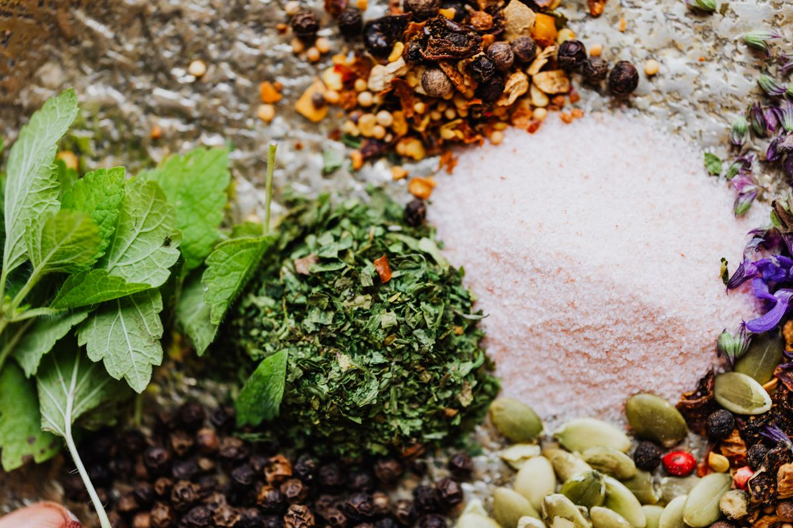
Weniger salzen – das geht!
Praktische Ideen, um den Salzkonsum zu reduzieren und Geschmack zu bewahren.
Beitrag lesen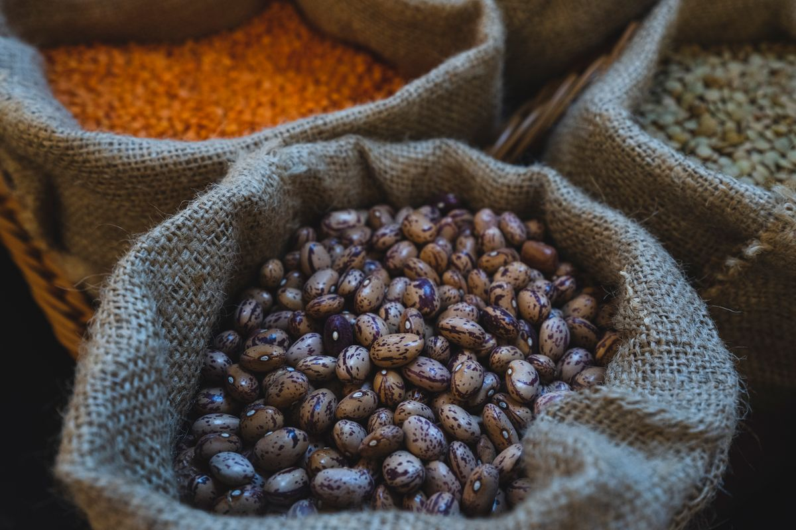
Kritische Nährstoffe in veganer Ernährung
Worauf bei einer gut geplanten pflanzlichen Ernährung zu achten ist.
Beitrag lesenDas Omega-3- und Omega-6-Verhältnis
Grundlagen zu Fettsäuren und ihrer Bedeutung in der Ernährung.
Beitrag lesenDEIN NÄCHSTER SCHRITT
Du musst nicht
alles verändern.
Nur anfangen.
Wir schauen gemeinsam, was dir guttut und in deinen Alltag passt. Persönlich, unkompliziert und online.
Es geht nicht um Perfektion, sondern darum, jeden Tag Entscheidungen zu treffen, die uns guttun.Daniel Suckrowinfo@veganiel.com